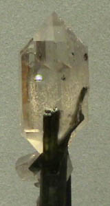
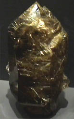
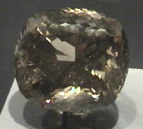
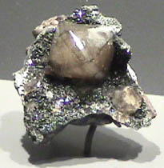
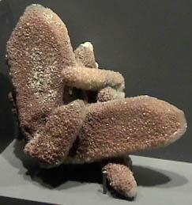
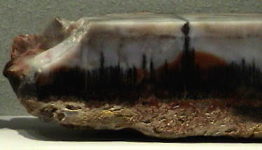
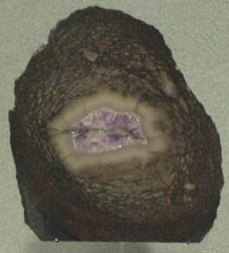

Forms of Quartz
|
Quartz is silicon dioxide, SiO2. Quartz is abundant in the Earth's crust, being the chemically simplest form of the silicates. All the samples here are displayed in the Smithsonian Museum of Natural History. This sample is described as quartz with elbaite is from Cruzeiro mine, Minas Gerais, Brazil and is about 2x6 cm. |  |
This sample at left above is quartz with rhodochrosite. The overall size is about 7x11 cm and the sample is from Cavmic, Crisana-Maramures, Romania. At right is quartz with chrysocolla. The sample size is about 6x8 cm and it is from old Dominion mine, Gila County, Arizona.
|
 | This is quartz with rutile. The mineral sample is about 8x18 cm and is from Itabiara, Bahia, Brazil. The 2670 carat gem is from Minas Gerais, Brazil. It appears to be about 7 cm across.  |
|
 | This sample is described as quartz with hematite. Its size is about 3x3 cm and it is from Cumbria, England. |
|
This quartz specimen is about 15x15 cm and is from Arizona. |  |
|
 | This sample is described as quartz from petrified wood. The sample was about 18x6 cm and was from Arizona. |
|
This is a petrified dinosaur bone according to the caption. It is about 9x11 cm and was found in Montrose County, Colorado. |  |
|
Index |